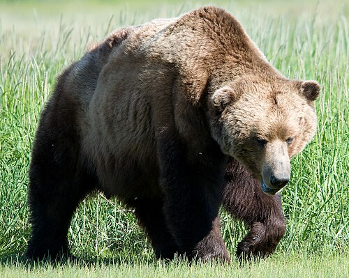

The brown bear (Ursus arctos) is found in parts of Eurasia and North America. Its conservation status is currently listed as Least Concern, and several subspecies of brown bear exist in different regions.
Learn MoreHere are some bear species:
The following countries have some of the largest populations of brown bears:
